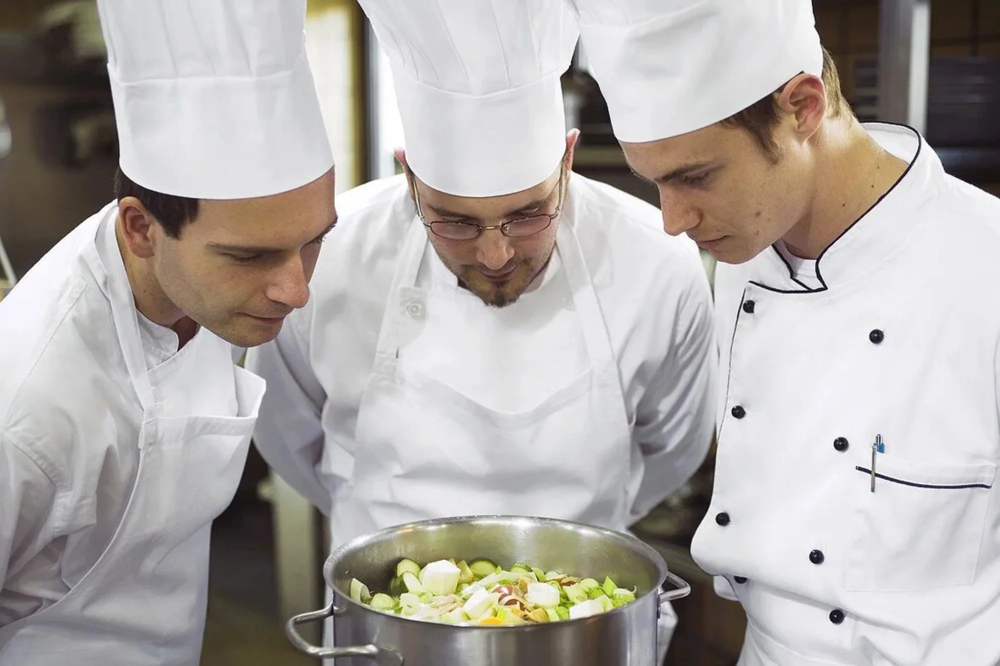

Welcome to Culinary Academy!
Here, your culinary journey begins.
Whether you're an aspiring chef, a passionate home cook, or simply someone who loves food, we're thrilled to have you join our community. Get ready to explore new flavors, master essential techniques, and unleash your creativity in the kitchen. With our team of experienced chefs and comprehensive curriculum, you'll have all the tools you need to turn your culinary dreams into reality. Let's embark on this delicious adventure together!
Meet Our Chefs

-
Chef Ivan Aleksi:
With over 15 years of experience working in Michelin-starred restaurants and luxury hotels around the world, Chef Mia brings a wealth of knowledge in French and Mediterranean cuisine. - Chef Jarl Alexander:
A master of Latin American cuisine, Chef Carlos has spent decades honing his skills in the kitchens of renowned restaurants across South America and the United States. From traditional dishes to modern interpretations, his vibrant and bold flavors reflect the rich culinary heritage of his homeland. - Chef Socrates Vasanta:
Raised in a family of restaurateurs, Chef Emily's love for food was cultivated from a young age. With a background in Asian fusion cuisine, she combines traditional cooking methods with contemporary flair to create dishes that are both nostalgic and innovative.